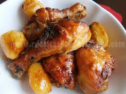
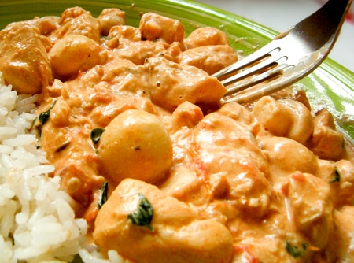

Aves

- Fricassê de Frango
- Frango desfiado com requeijão e creme de leite, com queijo e batata palha.
- Autor: Tiago Rodrigues
- Avaliação: 5
- 87 pessoas avaliaram essa receita
- 
- Frango Assado
- Coxa de frango assada com batatas
- Autor: Silvia Martins
- Avaliação: 4
- 79 pessoas avaliaram essa receita
- 
- Estrogonofe de Frango
- Delicioso estrogonofe de frango com champions.
- Autor: Silvia Martins
- Avaliação: 5
- 56 pessoas avaliaram essa receita